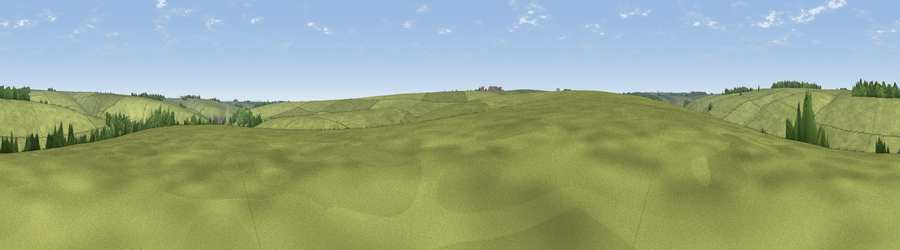

Viewpoint near Imber
#44587 in England · top 97% of its area beats it · near Imber · access?Where it is
The exact computed spot (ST 95822 48463). Click the marker for map links.
Public access: no public right of way or access land is recorded at this exact spot — it may be on private land. Computed from Natural England's CRoW access layer and OpenStreetMap rights of way — not the legal definitive map. Always verify locally.
The view, rendered

A 360° render of this exact spot computed from the terrain model, tree cover and land cover — summer colours, afternoon light, calibrated against photographs of famous viewpoints. Real trees, hedges and buildings will differ in detail.
The panorama
Grey silhouette: terrain skyline in each direction (720 bearings, Earth curvature and refraction included). Dashed green: skyline with trees (+15 m) and buildings (+8 m) as obstacles. Blue strip: how far the ground is visible on each bearing.
Where the view opens
Wedge length = distance to the farthest visible ground on that bearing (vegetation-aware). Rings at 10, 25 and 50 km.
What fills the view
97% grassland · 3% woodland
Angular shares of the visible panorama (visual magnitude), not map area. Landscape diversity 0.06 (0–1 Shannon).
Key numbers
More beautiful places nearby
The staircase of upgrades: each row has a higher view potential than everything closer. Driving times are estimates from straight-line distance, calibrated against real road routing — check an actual route before setting out.
| Place | Direction | Drive | Score |
|---|---|---|---|
| Rough Down | NE · 2 km | ~5 min | 31.0 |
| Stoke Hill | N · 4 km | ~10 min | 60.9 |
| Viewpoint near Edington | NNW · 4 km | ~10 min | 65.4 |
| Viewpoint near Edington | NW · 5 km | ~11 min | 71.9 |
| Viewpoint near Bratton | WNW · 7 km | ~14 min | 73.2 |
| Cley Hill | WSW · 12 km | ~23 min | 76.8 |
| Martinsell viewpoint | NE · 27 km | ~43 min | 76.9 |
| Viewpoint near Berwick St John | S · 28 km | ~44 min | 78.2 |
51.23534, -2.06122 · source: osm peak · position refined by local search. Computed location — check access rights before visiting.